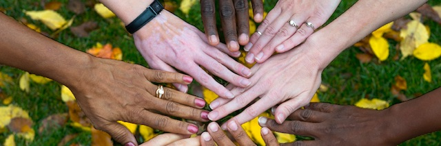

2018-05-13 08:00

American democracy begins with the word “we.” We the People. It’s a tiny word with a Napoleon complex: a third person pronoun appropriate to any group to which the speaker belongs. It seems so obvious yet the meaning of “we” has always been a bit dishonest, and the groups to which “we” belong equally so.
David Swanson’s book Curing Exceptionalism makes this point. In an interview discussing the book Swanson says that, if there is any hope of ending American Exceptionalism, citizens need to be very clear about what is meant when the word is invoked. “‘We just bombed Syria.’ — I didn’t bomb Syria. Did you?” he asks. “At least part of the time, try to see if you can make ‘we’ mean a smaller or larger group than a nation.”
When a white supremacist says “we are a nation of laws” while advocating for the deportation of brown people, what he really means is that current laws apply to brown people, not the colonists who took the land from them. That’s a whole different “we.”
Or when a liberal repudiates torture because “this is not who we are,” he’s speaking only for himself and not about the torture long practiced by police, the military, or foreign despots trained at American institutions like the School of the Americas. Torturers are most certainly who we are.
Sometimes the problem is that state propaganda uses “we” when referring to government policies it wants citizens to rally around. Dissidents, such as young Jews who oppose the Israeli occupation, say “not in my name” to make it clear that their views differ from what are assumed to be mainstream Jewish views about Israel.
Sometimes the problem is that “we” are ignorant of belonging to a group or even knowing much about that group. Most White Americans, for example, don’t really think of ourselves as a separate racial category. We don’t recognize white privilege and we don’t question its generational benefits. After all, we’re the “default.” Everyone else is a category — at least until you start trying to see through another man’s eyes.
And this brings us back to American Exceptionalism, nationalism, and overt racism. All are founded on the notion that “we” have some God-given right to privileged status — whether it be a white man in the boardroom or the American ambassador at the UN Security Council. It matters little that White America spans different European (and non-European) cultures, languages, socioeconomic and educational levels. Like an AMEX card, membership has its privileges. When an individual chooses membership in a “we” based on a ridiculous proposition — that skin color, religion or nationality say more about us than common struggles and interests — that choice is clearly all about the privilege.
The more you ponder the word, the less “we’ makes much sense. Though long banished from polite conversation, Americans having an honest reckoning with race and class would do the most to transform a scatter of unhappy, divided individuals into a truer version of the word”we."
And only after we have sorted out our common domestic identity will we be able to sit down at the UN as just one nation among many others.